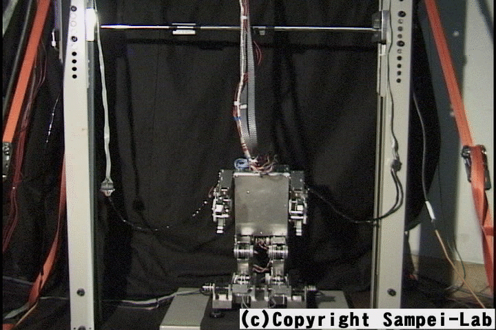

本研究の対象となっているアクロバットロボットは人間型をしており， 可動関節が肩，腰，膝，足首に左右計8個取りつけられた，4自由度の構造となっています． 本研究の目的はこのアクロバットロボットを地面から垂直に跳躍させ， 上空にある鉄棒に跳びつかせる，という運動を実現することです．
今までの研究から，肩，腰，膝，足首の順に体の上の部分から運動を行うときに， 高い跳躍を得られることがシミュレーションレベルでわかっています． 物理的拘束を受けて静止している多自由度モデルに跳躍させることを考えたとき， 上から順に関節を動かした方が，反力としての上向きの力を得やすいというものである． 本研究ではこれを実機に適用して確かめると共に， どのような入力タイミングで各関節を動かしていけば，より高く， より姿勢の良いジャンプが実現できるかを実験的に考察しています．
公開動画
投稿論文・学会発表
- Yuji KITAMURA, Naoyuki Shiraishi, Yasuyuki KAWAIDA, Shigeki NAKAURA, Mitsuji SAMPEI, "Experimental Study of Vertical Jumping Control for Acrobat Robot", JSME Conference on Robotics and Mechatronics, 2002
- Naoyuki SHIRAISHI,Yasuyuki KAWAIDA,Yuji KITAMURA, Shigeki NAKAURA and Mitsuji SAMPEI, "Vertical Jumping Control of an Acrobat Robot with Consideration of Input Timing", Proceedings of the 41th SICE Annual Conference,2002
- Yasuyuki KAWAIDA, Shigeki NAKAURA and Mitsuji SAMPEI, "A Study on Vertical Jumping Control of Acrobat Robot", Proceedings of the 40th SICE Annual Conference, 2001
- Masahiro MIYAZAKI, Mitsuji SAMPEI, and Masanobu KOGA, "Control of the motion of an acrobot approaching a horizontal bar", Advanced Robotics, 2001
- 三平満司，本田健，古賀雅伸， "初期角運動量を有する劣駆動飛遊系の姿勢制御"， 日本ロボット学会誌，2001
- 川井田康礼，中浦茂樹，三平満司， "アクロバットロボットを用いた跳びつきの制御"， 第40回計測自動制御学会学術講演会，2001
- 三平満司，本田健，古賀雅伸， "ドリフト項を有するノンホロノミック拘束系の制御-初期角運動量を有する劣駆動飛遊体の制御-"， 第38回計測自動制御学会学術講演会，1999